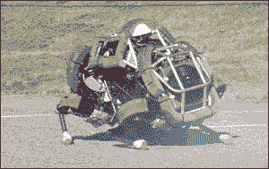

This is an absolute path. It won't work on your computer.
<img src="C:\Users\Beege\Pictures\9C9Y8Pr.gif">

Why? You may not be on Windows. You may not have the image in the Picture folder. This is not "portable." It won't work from system to system.
This is a relative path. It will work on your computer.
<img src="assets/images/9C9Y8Pr.gif">
Why? Instead of telling your browser, "start at C...", which doesn't exist on Linux or OS X machines, it tells it to start from whever the web page resides. It starts navigating around the file system from wherever this page is. Since there's a folder called "assets" in the same directory as this page, your browser can find it, if you cloned this project to your machine, since the image is bundled with the project. Then it just continues down the path to images and finally to our image. Awww yiss.